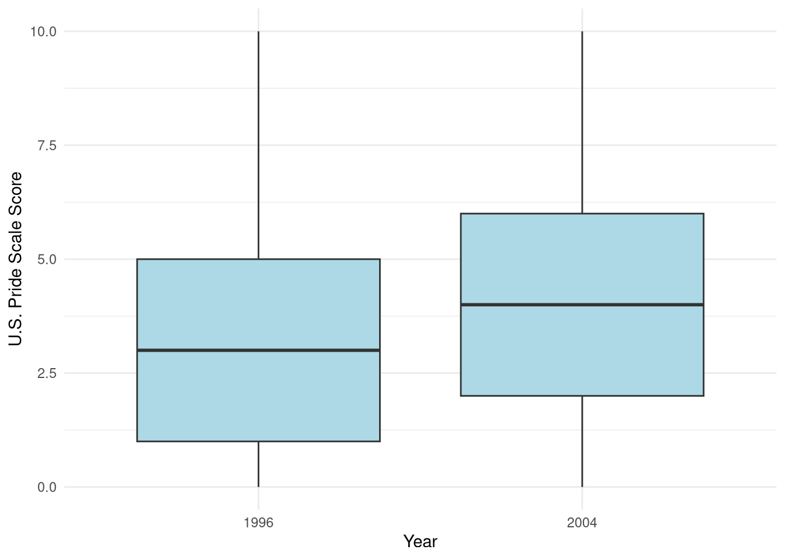
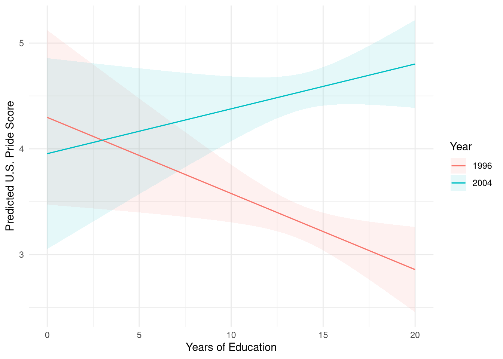
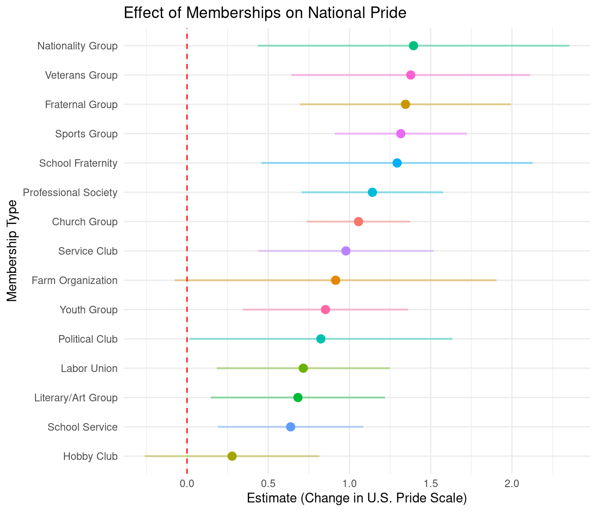

gss_clean <- gss_comb %>%
# Strip labelling attributes for simpler manipulation
mutate(across(everything(), as.numeric)) %>%
# For proud variables: Stata dropped if == 0
filter(if_all(prouddem:proudgrp, ~ .x != 0 | is.na(.x))) %>%
mutate(
# Recodes 0 and 9 to NA for am* variables
across(ambornin:amsports, ~ na_if(.x, 0)),
across(ambornin:amsports, ~ na_if(.x, 9)),
# Dichotomize proud* variables (1 = yes)
across(prouddem:proudgrp, ~ ifelse(.x == 1, 1, 0), .names = "{.col}bin"),
# Dichotomize am* variables for patriotism scale
across(ambornin:amfeel, ~ ifelse(.x == 1, 1, 0), .names = "{.col}bin"),
# Recode amcitizn-ifwrong: 8 = 3, then dichotomize < 3
across(c(amcitizn, amshamed, belikeus, ambetter, ifwrong), ~ ifelse(.x == 8, 3, .x)),
across(c(amcitizn, amshamed, belikeus, ambetter, ifwrong), ~ ifelse(.x < 3, 1, 0), .names = "{.col}bin"),
# Demographic recodes
educ = ifelse(educ %in% c(98, 99), NA, educ),
degree = ifelse(degree %in% c(8, 9), NA, degree),
memnum = ifelse(memnum == -1, NA, ifelse(memnum %in% c(98, 99), 0, memnum)),
usaborn = ifelse(born == 1, 1, 0),
south = ifelse(reg16 > 4 & region < 8, 1, 0),
conservative = ifelse(polviews %in% c(6, 7), 1, 0),
# Membership categories and binaries
memnumcat = case_when(
memnum == 0 ~ "0",
memnum %in% 1:2 ~ "1-2",
memnum >= 3 ~ "3+",
TRUE ~ NA_character_
),
memnumcat = factor(memnumcat, levels = c("0", "1-2", "3+")),
educcat = case_when(
educ <= 6 ~ "0-6 years",
educ >= 7 & educ <= 11 ~ "7-11 years",
educ == 12 ~ "12 years",
educ >= 13 & educ <= 15 ~ "13-15 years",
educ == 16 ~ "16 years",
educ >= 17 & educ <= 19 ~ "17-19 years",
educ >= 20 ~ "20+ years",
TRUE ~ NA_character_
),
educcat = factor(educcat, levels = c("0-6 years", "7-11 years", "12 years",
"13-15 years", "16 years", "17-19 years", "20+ years")),
cohort = year - age
) %>%
# Dichotomize the individual membership types
mutate(across(memfrat:memchurh, ~ ifelse(.x > 0 & !is.na(.x) & .x == 1, 1, 0), .names = "{.col}bin")) %>%
rowwise() %>%
mutate(
# U.S. Pride scale: sum of binary proud items. NA if any are missing.
uspridescal = if(any(is.na(c_across(prouddembin:proudgrpbin)))) NA_real_
else sum(c_across(prouddembin:proudgrpbin)),
# Patriotism scale
patriotscal = if(any(is.na(c_across(c(amborninbin, amcitbin, amlivedbin, amgovtbin, amfeelbin))))) NA_real_
else sum(c_across(c(amborninbin, amcitbin, amlivedbin, amgovtbin, amfeelbin))),
# Nationalist scale (mean reversed)
nationalistscal = 6 - mean(c_across(c(amcitizn, belikeus, ambetter, ifwrong)), na.rm = TRUE)
) %>%
ungroup() %>%
# Filter missing data out of the weight to ensure smooth modeling
filter(!is.na(wtssall))
# Ensure appropriate factors for models
gss_clean <- gss_clean %>%
mutate(
year_f = factor(year),
sex_f = factor(sex),
race_f = factor(race)
)Patriotism and the Choice Process: National Pride After 9/11
Introduction
Which groups are more likely to experience increased feelings of national pride after the experience of a threat to nation? In this paper, I use survey data on a representative sample of Americans collected before and after the events of 9/11 to shed light on this question. This “natural experiment” allows me adjudicate between two competing hypotheses regarding the socio-demographic distribution of feeling of national pride after the experience of a threat to the nation.
Theories in the tradition of the “authoritarian personality” conceive of national pride as reflecting a form “irrational conservatism.” These theories predict that members of low status groups will be much more likely to experience renewed feelings of national pride after the experience of a threat to the nation. From this perspective, a threat to the nation is seen as endangering the “ontological security” (Giddens 1984) of persons whose lives are characterized by routine and alienating work and who are disengaged from established institutions.
Theories of attachment to collectivities as a nested group on the other hand (Lawler 1992; Mueller and Lawler 1999), point to a different dynamic, and lead to a clearly divergent empirical implication. According to the choice-process approach, individuals are more likely to experience affective attachment to a larger group within which other groups that they belong to is nested (such as the nation), only to the extent that they are able to in fact experience freedom and autonomy in their everyday dealings, and to the extent that this autonomy and freedom is attributed to membership both in the more proximate groups that they are part of, and to the larger unit within which these groups are nested (Lawler 1992).
Data and Methods
In this modernized workflow, we draw data directly from the General Social Survey (GSS) using reproducible queries, focusing on the years 1996 and 2004 (before and after the events of 9/11). We use the gssr package to extract data and handle sample weights appropriately.
We process the U.S. Pride scale and Nationalist scale mirroring the original Stata script, ensuring proper handling of missing values (“IAP”, “DK”, “NA”) and dichotomization. We also construct predictors such as cohort, education categories, and voluntary association memberships.
Results
To make the regression tables cleaner, we first define a dictionary of clean variable labels.
We first visualize the change in the U.S. Pride Scale score between 1996 and 2004. As shown in Figure 1, national pride distributions shifted post-9/11.
ggplot(gss_clean %>% filter(!is.na(uspridescal)),
aes(x = factor(year), y = uspridescal, weight = wtssall)) +
geom_boxplot(fill = "lightblue") +
labs(x = "Year", y = "U.S. Pride Scale Score") +
theme_minimal()
Scale Validation
Before running models, we assess the internal reliability of the scales constructed for this analysis.
Cronbach's alpha for U.S. Pride scale: 0.804 Cronbach's alpha for Patriotism scale: 0.733 Cronbach's alpha for Nationalism scale: 0.643 Binary Item Models
We examine how the individual likelihoods of being “very proud” of various aspects of the U.S. changed from 1996 to 2004 by running survey-weighted logistic regressions for each binary indicator.
# Identify binary pride variables
pride_bins <- grep("^proud.*bin$", names(gss_clean), value = TRUE)
logit_models <- list()
for(v in pride_bins) {
# formula: var ~ year_f + cohort
f <- as.formula(paste(v, "~ year_f + cohort"))
m <- glm(f, data = gss_clean, family = quasibinomial(), weights = wtssall)
logit_models[[v]] <- m
}
# Show a selection of these models, converting estimates to Odds Ratios
modelsummary(logit_models[1:5],
stars = TRUE,
exponentiate = TRUE,
coef_map = coef_labels,
align = "lccccc",
title = "Logistic Regressions of Individual Pride Items (Odds Ratios)",
output = "markdown")| prouddembin | proudpolbin | proudecobin | proudsssbin | proudscibin | |
|---|---|---|---|---|---|
| Birth Cohort | 9.700000e-01*** | 9.840000e-01*** | 9.820000e-01*** | 9.670000e-01*** | 9.840000e-01*** |
| (3.000000e-03) | (3.000000e-03) | (3.000000e-03) | (4.000000e-03) | (3.000000e-03) | |
| Year: 2004 | 1.630000e+00*** | 1.276000e+00* | 1.802000e+00*** | 1.271000e+00+ | 1.534000e+00*** |
| (1.510000e-01) | (1.280000e-01) | (1.600000e-01) | (1.600000e-01) | (1.300000e-01) | |
| Intercept | 1.262492e+25*** | 7.209043e+12*** | 2.071108e+15*** | 1.640753e+27*** | 3.243228e+13*** |
| (6.884455e+25) | (4.198792e+13) | (1.074107e+16) | (1.172076e+28) | (1.641103e+14) | |
| Num.Obs. | 2422 | 2419 | 2458 | 2460 | 2447 |
| RMSE | 0.45 | 0.42 | 0.47 | 0.33 | 0.49 |
|
|||||
Nationalism and Irrational Conservatism
Before analyzing U.S. Pride, we can look at the “Nationalism” scale. The “irrational conservatism” perspective posits that 9/11 should have driven an increase in nationalism, particularly among lower-status groups. We estimate whether Nationalism increased overall, and whether the effect of education on Nationalism changed over time.
# Baseline change in nationalism
mod_nat_base <- lm(nationalistscal ~ year_f + cohort, data = gss_clean, weights = wtssall)
# Interaction of education and period on nationalism
mod_nat_int <- lm(nationalistscal ~ educ * year_f + cohort, data = gss_clean, weights = wtssall)
modelsummary(list("Base Change" = mod_nat_base, "Educ Interaction" = mod_nat_int),
stars = TRUE,
coef_map = coef_labels,
align = "lcc",
title = "Predictors of Nationalism Scale (1996 vs 2004)",
output = "markdown")| Base Change | Educ Interaction | |
|---|---|---|
| Education (Years) | -0.053*** | |
| (0.007) | ||
| Birth Cohort | -0.010*** | -0.009*** |
| (0.001) | (0.001) | |
| Year: 2004 | 0.134*** | 0.190 |
| (0.028) | (0.135) | |
| Education × Year 2004 | -0.003 | |
| (0.010) | ||
| Intercept | 22.352*** | 21.858*** |
| (1.645) | (1.607) | |
| Num.Obs. | 2558 | 2555 |
| R2 | 0.050 | 0.096 |
| R2 Adj. | 0.049 | 0.094 |
| AIC | 5630.1 | 5500.9 |
| BIC | 5653.5 | 5535.9 |
| Log.Lik. | -2811.070 | -2744.434 |
| F | 67.404 | 67.571 |
| RMSE | 0.70 | 0.67 |
|
||
As the Indiana presentation notes indicate, neither the need-based nor the irrational conservatism hypotheses fully explain the patterns of national pride and nationalism after 9/11. We now turn to U.S. Pride under the Choice-Process framework.
Pride Scale Regression Analysis
We estimate OLS models comparing the effects of education, occupational status (SEI), and nested group memberships on national pride across the two periods. Instead of purely subsetting, we fit a pooled model to formally test the interaction between education and the survey year (1996 vs 2004).
# Sub-setted models
mod_educ_96 <- lm(uspridescal ~ educ + cohort, data = gss_clean, subset = year == 1996, weights = wtssall)
mod_educ_04 <- lm(uspridescal ~ educ + cohort, data = gss_clean, subset = year == 2004, weights = wtssall)
# Pooled model with interaction
mod_educ_interaction <- lm(uspridescal ~ educ * year_f + cohort, data = gss_clean, weights = wtssall)
modelsummary(list("1996" = mod_educ_96, "2004" = mod_educ_04, "Pooled Interaction" = mod_educ_interaction),
stars = TRUE,
coef_map = coef_labels,
align = "lccc",
title = "Effects of Education on U.S. Pride Scale (1996 vs 2004)",
output = "markdown")| 1996 | 2004 | Pooled Interaction | |
|---|---|---|---|
| Education (Years) | -0.066* | 0.040 | -0.072* |
| (0.030) | (0.032) | (0.030) | |
| Birth Cohort | -0.047*** | -0.028*** | -0.038*** |
| (0.005) | (0.005) | (0.004) | |
| Year: 2004 | -0.343 | ||
| (0.624) | |||
| Education × Year 2004 | 0.114** | ||
| (0.044) | |||
| Intercept | 96.569*** | 59.411*** | 79.100*** |
| (10.017) | (10.314) | (7.183) | |
| Num.Obs. | 1066 | 975 | 2041 |
| R2 | 0.081 | 0.030 | 0.084 |
| R2 Adj. | 0.080 | 0.028 | 0.083 |
| AIC | 5239.6 | 4778.3 | 10021.1 |
| BIC | 5259.4 | 4797.8 | 10054.8 |
| Log.Lik. | -2615.781 | -2385.153 | -5004.531 |
| RMSE | 2.73 | 2.60 | 2.67 |
|
|||
To better visualize how the effect of education on national pride shifted post-9/11, we plot the predicted marginal effects of education for both years.

mod_sei_96 <- lm(uspridescal ~ sei + cohort, data = gss_clean, subset = year == 1996, weights = wtssall)
mod_sei_04 <- lm(uspridescal ~ sei + cohort, data = gss_clean, subset = year == 2004, weights = wtssall)
modelsummary(list("1996" = mod_sei_96, "2004" = mod_sei_04),
stars = TRUE,
coef_map = coef_labels,
align = "lcc",
title = "Effects of SEI on U.S. Pride Scale (1996 vs 2004)",
output = "markdown")| 1996 | 2004 | |
|---|---|---|
| Birth Cohort | -0.051*** | -0.027*** |
| (0.005) | (0.005) | |
| Occupational Status (SEI) | -0.001 | 0.007+ |
| (0.004) | (0.004) | |
| Intercept | 102.604*** | 56.507*** |
| (10.419) | (10.795) | |
| Num.Obs. | 1028 | 928 |
| R2 | 0.082 | 0.030 |
| R2 Adj. | 0.080 | 0.028 |
| AIC | 5051.5 | 4549.4 |
| BIC | 5071.2 | 4568.7 |
| Log.Lik. | -2521.746 | -2270.693 |
| RMSE | 2.72 | 2.61 |
|
||
Nested Membership and Nationalism (2004)
Finally, following the choice process framework, we assess how voluntary association membership acts as a nested grouping structure that correlates with attachment to the nation. We evaluate this against a full suite of demographic controls (Gender, Race, Region).
# Baseline with demographics
mod_base <- lm(uspridescal ~ educ + cohort + sex_f + race_f + south,
data = gss_clean, subset = year == 2004, weights = wtssall)
# Adding membership dummy (as evaluated in presentation slide 36)
mod_mem_cat <- lm(uspridescal ~ educ + cohort + sex_f + race_f + south + memnumcat,
data = gss_clean, subset = year == 2004, weights = wtssall)
# Adding continuous membership count
mod_mem_cont <- lm(uspridescal ~ educ + cohort + sex_f + race_f + south + memnum,
data = gss_clean, subset = year == 2004, weights = wtssall)
# Full model with Nationalism
mod_full <- lm(uspridescal ~ educ + cohort + sex_f + race_f + south + memnum + nationalistscal,
data = gss_clean, subset = year == 2004, weights = wtssall)
modelsummary(list("Demographics" = mod_base, "Mem (Categorical)" = mod_mem_cat, "Mem (Count)" = mod_mem_cont, "Full (+ Nationalism)" = mod_full),
stars = TRUE,
coef_map = coef_labels,
align = "lcccc",
title = "Predictors of U.S. Pride (2004 sample only)",
output = "markdown")| Demographics | Mem (Categorical) | Mem (Count) | Full (+ Nationalism) | |
|---|---|---|---|---|
| Education (Years) | 0.014 | -0.014 | -0.011 | 0.057+ |
| (0.032) | (0.033) | (0.033) | (0.032) | |
| Birth Cohort | -0.025*** | -0.024*** | -0.024*** | -0.016** |
| (0.005) | (0.005) | (0.005) | (0.005) | |
| Female | -0.686*** | -0.659*** | -0.661*** | -0.572*** |
| (0.166) | (0.166) | (0.166) | (0.159) | |
| Race: Black | -1.279*** | -1.305*** | -1.322*** | -1.134*** |
| (0.258) | (0.258) | (0.258) | (0.247) | |
| Race: Other | -0.128 | -0.075 | -0.100 | -0.087 |
| (0.338) | (0.338) | (0.338) | (0.323) | |
| Nationalist Scale | 1.171*** | |||
| (0.121) | ||||
| Total Memberships (Count) | 0.115* | 0.113** | ||
| (0.045) | (0.043) | |||
| Memberships: 1-2 | 0.412* | |||
| (0.199) | ||||
| Memberships: 3+ | 0.683** | |||
| (0.221) | ||||
| Intercept | 53.425*** | 50.830*** | 51.459*** | 30.874** |
| (10.190) | (10.202) | (10.206) | (9.983) | |
| Num.Obs. | 975 | 974 | 974 | 974 |
| R2 | 0.069 | 0.079 | 0.076 | 0.157 |
| R2 Adj. | 0.065 | 0.072 | 0.070 | 0.151 |
| AIC | 4743.8 | 4735.3 | 4736.6 | 4649.0 |
| BIC | 4778.0 | 4779.2 | 4775.7 | 4692.9 |
| Log.Lik. | -2364.920 | -2358.627 | -2360.318 | -2315.508 |
| RMSE | 2.57 | 2.55 | 2.56 | 2.41 |
|
||||

The results above reveal a crucial dynamic at the heart of the choice-process approach. While the overall volume of voluntary memberships (the memnum count variable in Table 4) does not significantly predict national pride, specific types of organizational memberships have strong, distinct effects. A simple count of memberships assumes all groups foster national attachment equally. However, according to choice-process theory, affective attachment to the nation requires that the proximate group be cognitively “nested” within the national structure. Groups that are inherently linked to the national fabric—such as Veterans Groups, Political Clubs, and Fraternal Organizations—foster autonomy that is easily attributed to the larger national collective, resulting in increased U.S. pride. Conversely, when all memberships are aggregated, the positive effects of these highly-nested groups are diluted by the noise of locally-focused or apolitical associations, explaining why sheer volume fails to capture the underlying sociological mechanism.
Conclusion
By migrating the project to R and Quarto, the data collection, cleaning, and analysis are now fully transparent and reproducible within a single integrated document.